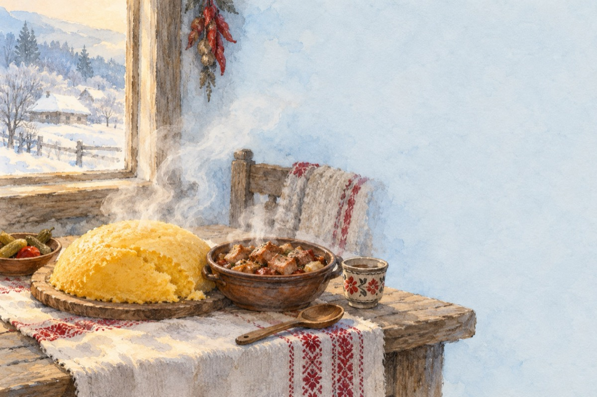

Pomana porcului
O aștepți și-ți plouă-n gură
Cu gândul la șorici și-o țuică fiartă
O mămăligă caldă, lângă-o tochitură
Și-ți plângi de milă, de când stomacul o așteaptă.
Se duce zvonul pe la neamuri, prin vecini
Că astăzi a sosit sorocul
S-aude guițând și lătrături de câini,
Într-adevăr, s-a tăiat porcul!
Și vâlvătaia focului de paie
Se-ncinge pe eroul așteptat.
Mirosul de șorici la nas te taie
Și doi călăi îl iau la curățat!
Îl opăresc cu apă pe măsură
Șoricul să se frăgezească.
Din când în când o țuică; mai trag o-nghițitură,
Ca stomăcuțul să se pregătească!
Și repejor se-ntinde-n casă-o masă
Cu fripturică, tochitură, cu de toate,
S-adună toți, ca mămăliga să nu se răcească
Și bagi de toate-n tine pe îndestulate!...
Deatâta poftă ai uitat un lucru important
Făr’ să extragi din toate-un radical.
Și rezultatul este-acel neașteptat
Din toate-aceste pofte, ajuns-ai la spital!
Vasile Groza
Apare și în: Privește-mă în ochi (2016).